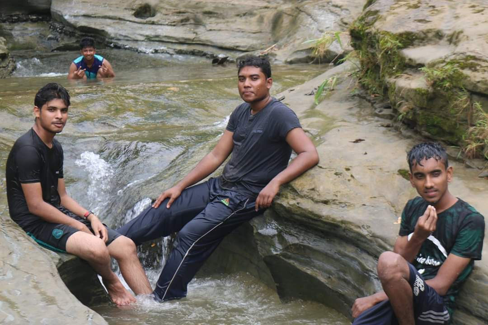
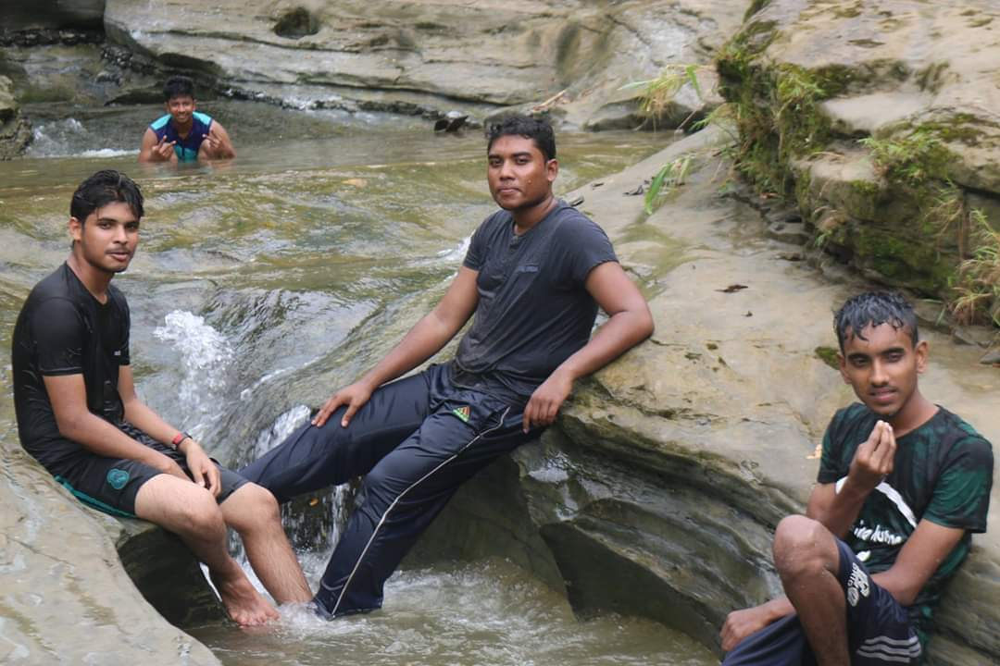
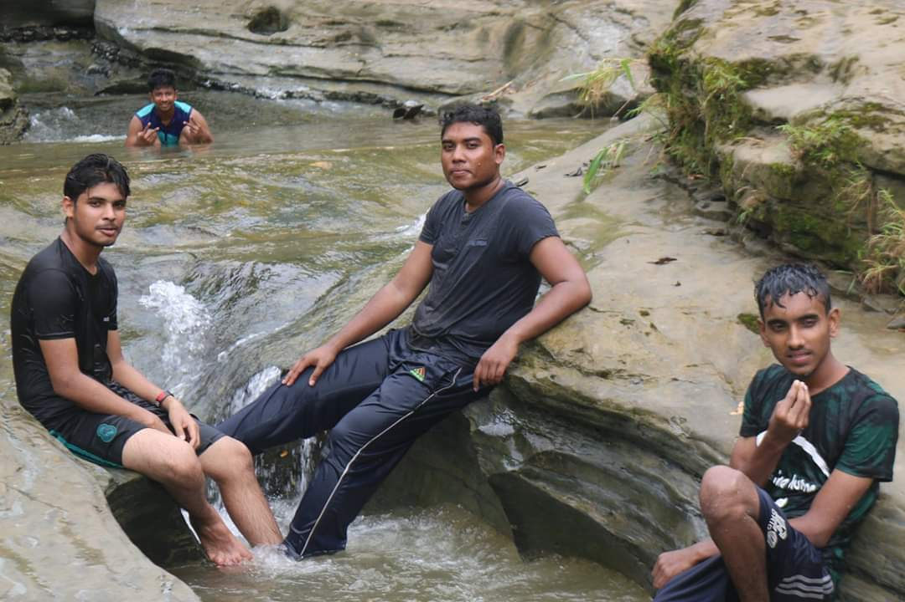

My Favourite Place Is Bandorbon.Last I Had Visited Bandorbon 2 Years Age.I Like Bandorbon Because It Is Totally Natural.There Have No Sound Polution,Air Polution And It Is Cool Area.In This Place There Have More Fountain.I Would To Like Say That Aboriginal In Trouble Because Their Have More Problem Like Water Problem.

The beach in Cox's Bazar is sandy and has a gentle slope and with an unbroken length of 155 km (96 mi) it is often termed the "longest natural unbroken sea beach" in the world. There are many disputes over that claim since the Federal Republic of Brazil has over 4,500 miles of coastline on the South Atlantic which covers sand beaches such as Copacabana in the State of Rio de Janeiro. [2][3][4] It is located 150 km (93 mi) south of the divisional headquarter of Chittagong. Cox's Bazar is also known by the name Panowa, which translates literally as "yellow flower". Another old name was "Palongkee".
I went india in 2017 for my student visa.however my visa had been refused.this time i enjoyed every moment.i had visited many place like lotus temple,kutub minar,palarment house and ete.this time i planned after get my visa i will visit taj-mahal.but my planned had been destroyed.
Its two hours journey from Sylhet town. Bisnakandi is a combination of falls, flowing water, stones, and green hilly view. Road condition is not so good but after reaching there worth to visit. This place is the borderline of Bangladesh and India.Ratargul Swamp Forest is a freshwater swamp forest located in Gowain River, Fatehpur Union, Gowainghat, Sylhet, Bangladesh. It is the only swamp forest.Jaflong is one of the most attractive tourist spots in Sylhet division. It's about 60 km far from Sylhet town and takes two hours drive to reach there
Kushtia Municipalty. Lalon Shah (1774-1890) Baul guru, and singer and composer of baul songs. According to tradition, he was born into a kayastha family in the village of Bhandara in Kushtia. As a young boy, Lalon caught smallpox and was abandoned in a critical condition.
THANK YOU